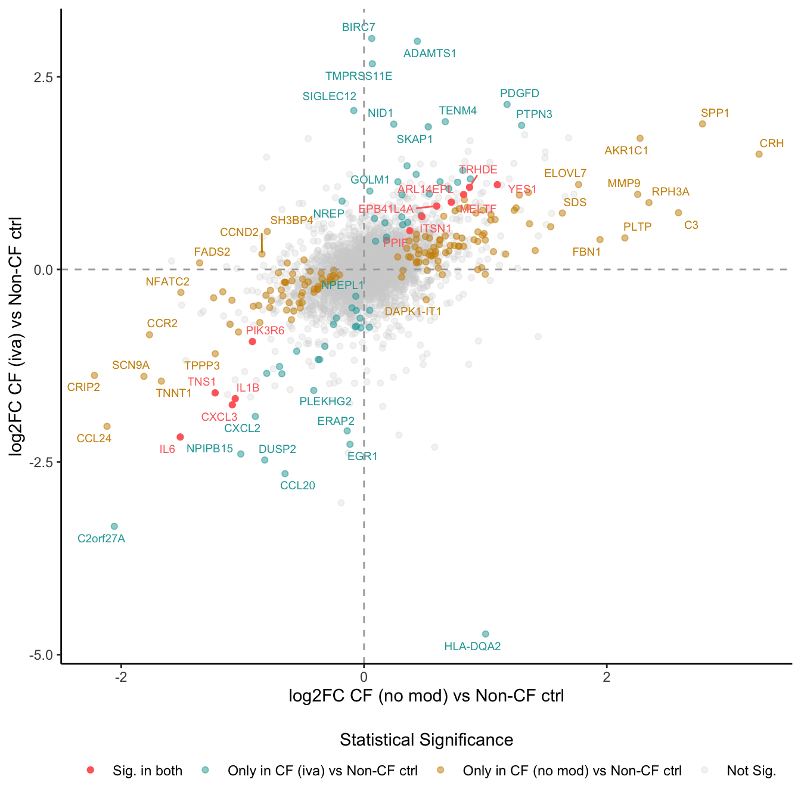
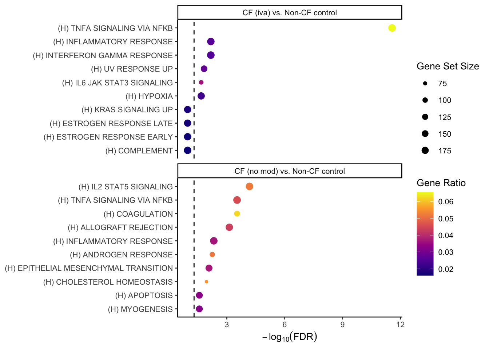
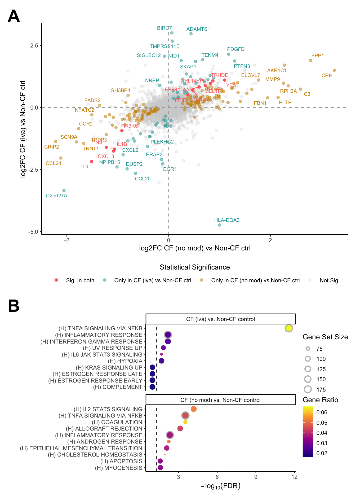

Last updated: 2026-04-01
Checks: 7 0
Knit directory:
paediatric-cf-inflammation-citeseq/
This reproducible R Markdown analysis was created with workflowr (version 1.7.1). The Checks tab describes the reproducibility checks that were applied when the results were created. The Past versions tab lists the development history.
Great! Since the R Markdown file has been committed to the Git repository, you know the exact version of the code that produced these results.
Great job! The global environment was empty. Objects defined in the global environment can affect the analysis in your R Markdown file in unknown ways. For reproduciblity it’s best to always run the code in an empty environment.
The command set.seed(20240216) was run prior to running
the code in the R Markdown file. Setting a seed ensures that any results
that rely on randomness, e.g. subsampling or permutations, are
reproducible.
Great job! Recording the operating system, R version, and package versions is critical for reproducibility.
Nice! There were no cached chunks for this analysis, so you can be confident that you successfully produced the results during this run.
Great job! Using relative paths to the files within your workflowr project makes it easier to run your code on other machines.
Great! You are using Git for version control. Tracking code development and connecting the code version to the results is critical for reproducibility.
The results in this page were generated with repository version 5879432. See the Past versions tab to see a history of the changes made to the R Markdown and HTML files.
Note that you need to be careful to ensure that all relevant files for
the analysis have been committed to Git prior to generating the results
(you can use wflow_publish or
wflow_git_commit). workflowr only checks the R Markdown
file, but you know if there are other scripts or data files that it
depends on. Below is the status of the Git repository when the results
were generated:
Ignored files:
Ignored: .Rhistory
Ignored: .Rproj.user/
Ignored: analysis/.DS_Store
Ignored: analysis/obsolete/
Ignored: code/obsolete/
Ignored: data/.DS_Store
Ignored: data/C133_Neeland_batch0/
Ignored: data/C133_Neeland_batch1/
Ignored: data/C133_Neeland_batch2/
Ignored: data/C133_Neeland_batch3/
Ignored: data/C133_Neeland_batch4/
Ignored: data/C133_Neeland_batch5/
Ignored: data/C133_Neeland_batch6/
Ignored: data/C133_Neeland_merged/
Ignored: data/Neeland_processed_data_1.h5ad
Ignored: data/Neeland_processed_data_2.h5ad
Ignored: data/Neeland_processed_data_3.h5ad
Ignored: data/intermediate_objects/.DS_Store
Ignored: data/updated_h5ad_files/
Ignored: output/.DS_Store
Ignored: renv/library/
Ignored: renv/staging/
Untracked files:
Untracked: C133_Neeland_preprocessed_SCEs.tar.gz
Untracked: analysis/cellxgene_submission.Rmd
Untracked: data/GOBP_CYTOKINE_MEDIATED_SIGNALING_PATHWAY.v2025.1.Hs.tsv
Untracked: data/cellxgene_cell_ontologies_ann_level_3.xlsx
Untracked: data/gencode.v44.primary_assembly.annotation.gtf
Unstaged changes:
Modified: .DS_Store
Modified: analysis/13.0_DGE_analysis_macrophages.Rmd
Modified: analysis/13.1_DGE_analysis_macro-alveolar.Rmd
Modified: analysis/13.2_DGE_analysis_macro-APOC2+.Rmd
Modified: analysis/13.3_DGE_analysis_macro-CCL.Rmd
Modified: analysis/13.4_DGE_analysis_macro-IFI27.Rmd
Modified: analysis/13.5_DGE_analysis_macro-lipid.Rmd
Modified: analysis/13.6_DGE_analysis_macro-monocyte-derived.Rmd
Modified: analysis/13.7_DGE_analysis_macro-proliferating.Rmd
Modified: analysis/14.0_DGE_analysis_CD4-T-cells.Rmd
Modified: analysis/14.1_DGE_analysis_CD8-T-cells.Rmd
Modified: analysis/14.2_DGE_analysis_DC-cells.Rmd
Modified: analysis/15.0_proportions_analysis_ann_level_1.Rmd
Modified: analysis/15.1_proportions_analysis_ann_level_3_non-macrophages.Rmd
Modified: analysis/15.2_proportions_analysis_ann_level_3_macrophages.Rmd
Modified: output/dge_analysis/macrophages/CAM.FIBROSIS.CF.IVAvCF.NO_MOD.csv
Modified: output/dge_analysis/macrophages/CAM.FIBROSIS.CF.IVAvNON_CF.CTRL.csv
Modified: output/dge_analysis/macrophages/CAM.FIBROSIS.CF.LUMA_IVAvCF.NO_MOD.csv
Modified: output/dge_analysis/macrophages/CAM.FIBROSIS.CF.NO_MOD.SvCF.NO_MOD.M.csv
Modified: output/dge_analysis/macrophages/CAM.FIBROSIS.CF.NO_MODvNON_CF.CTRL.csv
Modified: output/dge_analysis/macrophages/CAM.GO.CF.IVAvCF.NO_MOD.csv
Modified: output/dge_analysis/macrophages/CAM.GO.CF.IVAvNON_CF.CTRL.csv
Modified: output/dge_analysis/macrophages/CAM.GO.CF.LUMA_IVAvCF.NO_MOD.csv
Modified: output/dge_analysis/macrophages/CAM.GO.CF.NO_MOD.SvCF.NO_MOD.M.csv
Modified: output/dge_analysis/macrophages/CAM.GO.CF.NO_MODvNON_CF.CTRL.csv
Modified: output/dge_analysis/macrophages/CAM.HALLMARK.CF.IVAvCF.NO_MOD.csv
Modified: output/dge_analysis/macrophages/CAM.HALLMARK.CF.IVAvNON_CF.CTRL.csv
Modified: output/dge_analysis/macrophages/CAM.HALLMARK.CF.LUMA_IVAvCF.NO_MOD.csv
Modified: output/dge_analysis/macrophages/CAM.HALLMARK.CF.NO_MOD.SvCF.NO_MOD.M.csv
Modified: output/dge_analysis/macrophages/CAM.HALLMARK.CF.NO_MODvNON_CF.CTRL.csv
Modified: output/dge_analysis/macrophages/CAM.REACTOME.CF.IVAvCF.NO_MOD.csv
Modified: output/dge_analysis/macrophages/CAM.REACTOME.CF.IVAvNON_CF.CTRL.csv
Modified: output/dge_analysis/macrophages/CAM.REACTOME.CF.LUMA_IVAvCF.NO_MOD.csv
Modified: output/dge_analysis/macrophages/CAM.REACTOME.CF.NO_MOD.SvCF.NO_MOD.M.csv
Modified: output/dge_analysis/macrophages/CAM.REACTOME.CF.NO_MODvNON_CF.CTRL.csv
Modified: output/dge_analysis/macrophages/CAM.WP.CF.IVAvCF.NO_MOD.csv
Modified: output/dge_analysis/macrophages/CAM.WP.CF.IVAvNON_CF.CTRL.csv
Modified: output/dge_analysis/macrophages/CAM.WP.CF.LUMA_IVAvCF.NO_MOD.csv
Modified: output/dge_analysis/macrophages/CAM.WP.CF.NO_MOD.SvCF.NO_MOD.M.csv
Modified: output/dge_analysis/macrophages/CAM.WP.CF.NO_MODvNON_CF.CTRL.csv
Modified: output/dge_analysis/macrophages/CF.IVAvCF.NO_MOD.csv
Modified: output/dge_analysis/macrophages/CF.IVAvNON_CF.CTRL.csv
Modified: output/dge_analysis/macrophages/CF.LUMA_IVAvCF.NO_MOD.csv
Modified: output/dge_analysis/macrophages/CF.NO_MOD.SvCF.NO_MOD.M.csv
Modified: output/dge_analysis/macrophages/CF.NO_MODvNON_CF.CTRL.csv
Modified: output/dge_analysis/macrophages/ORA.GO.CF.IVAvNON_CF.CTRL.csv
Modified: output/dge_analysis/macrophages/ORA.GO.CF.NO_MOD.SvCF.NO_MOD.M.csv
Modified: output/dge_analysis/macrophages/ORA.GO.CF.NO_MODvNON_CF.CTRL.csv
Modified: output/dge_analysis/macrophages/ORA.HALLMARK.CF.IVAvCF.NO_MOD.csv
Modified: output/dge_analysis/macrophages/ORA.REACTOME.CF.NO_MODvNON_CF.CTRL.csv
Modified: output/pdf_figures/Figure_1.pdf
Modified: output/pdf_figures/Figure_2.pdf
Modified: output/pdf_figures/Figure_3.pdf
Modified: output/pdf_figures/Figure_4.pdf
Modified: output/pdf_figures/Figure_5.pdf
Note that any generated files, e.g. HTML, png, CSS, etc., are not included in this status report because it is ok for generated content to have uncommitted changes.
These are the previous versions of the repository in which changes were
made to the R Markdown (analysis/16.5_Figure_6.Rmd) and
HTML (docs/16.5_Figure_6.html) files. If you’ve configured
a remote Git repository (see ?wflow_git_remote), click on
the hyperlinks in the table below to view the files as they were in that
past version.
| File | Version | Author | Date | Message |
|---|---|---|---|---|
| Rmd | 5879432 | Jovana Maksimovic | 2026-04-01 | wflow_publish(c("analysis/16.0_Figure_1.Rmd", "analysis/16.1_Figure_2.Rmd", |
| html | 66498fe | Jovana Maksimovic | 2025-09-10 | Build site. |
| Rmd | 68c82b7 | Jovana Maksimovic | 2025-09-10 | wflow_publish("analysis/16.5_Figure_6.Rmd") |
Load libraries.
suppressPackageStartupMessages({
library(SingleCellExperiment)
library(edgeR)
library(tidyverse)
library(ggplot2)
library(Seurat)
library(glmGamPoi)
library(dittoSeq)
library(here)
library(clustree)
library(patchwork)
library(AnnotationDbi)
library(org.Hs.eg.db)
library(glue)
library(speckle)
library(tidyHeatmap)
library(paletteer)
library(dsb)
library(ggh4x)
library(readxl)
library(gt)
})
source(here("code/utility.R"))file <- here("data",
"intermediate_objects",
"macrophages.all_samples.fit.rds")
deg_results <- readRDS(file = file)
contr <- deg_results$contr[,1:2]
lapply(1:ncol(contr), function(i) {
lrt <- glmLRT(deg_results$fit, contrast = contr[,i])
topTags(lrt, n = Inf) %>%
data.frame %>%
rownames_to_column(var = "Symbol") %>%
dplyr::arrange(Symbol) %>%
dplyr::rename_with(~ paste0(.x, ".", i))
}) %>% bind_cols -> all_lrtall_lrt %>%
mutate(IVA = ifelse(FDR.1 < 0.05 & FDR.2 < 0.05, "#FF6B6B",
ifelse(FDR.1 < 0.05 & FDR.2 >= 0.05, "#CC8E00",
ifelse(FDR.1 >= 0.05 & FDR.2 < 0.05, "#20A4A4",
"lightgrey")))) -> all_lrt
ggplot(all_lrt, aes(x = logFC.1,
y = logFC.2)) +
geom_point(data = subset(all_lrt, IVA %in% "lightgrey"),
aes(colour = "lightgrey"),
alpha = 0.25) +
geom_point(data = subset(all_lrt, IVA %in% "#20A4A4"),
aes(colour = "#20A4A4"),
alpha = 0.5) +
geom_point(data = subset(all_lrt, IVA %in% "#CC8E00"),
aes(colour = "#CC8E00"),
alpha = 0.5) +
geom_point(data = subset(all_lrt, IVA %in% "#FF6B6B"),
aes(colour = "#FF6B6B")) +
ggrepel::geom_text_repel(data = subset(all_lrt, (IVA %in% "#20A4A4")),
aes(x = logFC.1, y = logFC.2,
label = Symbol.1),
size = 2.5, colour = "#20A4A4", max.overlaps = 5) +
ggrepel::geom_text_repel(data = subset(all_lrt, (IVA %in% "#CC8E00")),
aes(x = logFC.1, y = logFC.2,
label = Symbol.1),
size = 2.5, colour = "#CC8E00", max.overlaps = 5) +
ggrepel::geom_text_repel(data = subset(all_lrt, (IVA %in% "#FF6B6B")),
aes(x = logFC.1, y = logFC.2,
label = Symbol.1),
size = 2.5, colour = "#FF6B6B", max.overlaps = Inf) +
geom_hline(yintercept = 0, linetype = "dashed", colour = "darkgrey") +
geom_vline(xintercept = 0, linetype = "dashed", colour = "darkgrey") +
labs(x = "log2FC CF (no mod) vs Non-CF ctrl",
y = "log2FC CF (iva) vs Non-CF ctrl") +
scale_colour_identity(guide = "legend",
breaks = c("#FF6B6B", "#20A4A4", "#CC8E00","lightgrey"),
labels = c("Sig. in both",
"Only in CF (iva) vs Non-CF ctrl",
"Only in CF (no mod) vs Non-CF ctrl",
"Not Sig."),
name = "Statistical Significance") +
theme_classic() +
theme(legend.position = "bottom",
legend.direction = "vertical",
legend.title = element_text(hjust = 0.5)) +
guides(colour = guide_legend(ncol = 4)) -> p1
p1
| Version | Author | Date |
|---|---|---|
| 66498fe | Jovana Maksimovic | 2025-09-10 |
Hs.c2.all <- convert_gmt_to_list(here("data/c2.all.v2024.1.Hs.entrez.gmt"))
Hs.h.all <- convert_gmt_to_list(here("data/h.all.v2024.1.Hs.entrez.gmt"))
Hs.c5.all <- convert_gmt_to_list(here("data/c5.all.v2024.1.Hs.entrez.gmt"))
fibrosis <- create_custom_gene_lists_from_file(here("data/fibrosis_gene_sets.csv"))
# add fibrosis sets from REACTOME and WIKIPATHWAYS
fibrosis <- c(lapply(fibrosis, function(l) l[!is.na(l)]),
Hs.c2.all[str_detect(names(Hs.c2.all), "FIBROSIS")])
gene_sets_list <- list(HALLMARK = Hs.h.all,
GO = Hs.c5.all,
REACTOME = Hs.c2.all[str_detect(names(Hs.c2.all), "REACTOME")],
WP = Hs.c2.all[str_detect(names(Hs.c2.all), "^WP")],
FIBROSIS = fibrosis)num <- 10
hallmark_ora <- rbind(read_csv(file = here("output",
"dge_analysis",
"macrophages",
"ORA.HALLMARK.CF.IVAvNON_CF.CTRL.csv")) %>%
slice_head(n = num) %>%
mutate(contrast = "CF (iva) vs. Non-CF control",
Rank = 1:n()),
read_csv(file = here("output",
"dge_analysis",
"macrophages",
"ORA.HALLMARK.CF.NO_MODvNON_CF.CTRL.csv")) %>%
slice_head(n = num) %>%
mutate(contrast = "CF (no mod) vs. Non-CF control",
Rank = 1:n()))
library(dplyr)
library(ggplot2)
library(tidytext) # for reorder_within() / scale_y_reordered()
library(scales) # for squish
# df is your tibble
dotdat <- hallmark_ora %>%
mutate(
score = -log10(pmax(FDR, .Machine$double.xmin)), # avoid Inf if FDR==0
de_prop = DE / N,
Set = gsub("^HALLMARK_", "(H) ", Set), # replace prefix
Set = gsub("_", " ", Set), # remove underscores
# order within each contrast by Rank (1 = top), shown at top of facet
Set_ord = reorder_within(Set, -Rank, contrast)
)
ggplot(dotdat, aes(x = score, y = Set_ord, size = N, color = de_prop)) +
geom_point() +
scale_y_reordered() +
facet_wrap(~ contrast, scales = "free_y", ncol = 1) +
scale_size(range = c(1, 3), name = "Gene Set Size") +
scale_color_viridis_c(name = "Gene Ratio", oob = squish,
option = "plasma") +
geom_vline(xintercept = -log10(0.05),
linetype = "dashed") +
labs(
x = expression(-log[10](FDR)),
y = NULL,
) +
theme_classic(base_size = 10) -> p2
p2
| Version | Author | Date |
|---|---|---|
| 66498fe | Jovana Maksimovic | 2025-09-10 |
library(dplyr)
library(ggplot2)
library(tidytext) # for reorder_within / scale_y_reordered
library(scales)
dotdat <- hallmark_ora %>%
mutate(
score = -log10(pmax(FDR, .Machine$double.xmin)),
de_prop = DE / N,
# clean set labels
Set_lbl = gsub("^HALLMARK_", "(H) ", Set),
Set_lbl = gsub("_", " ", Set_lbl)
) %>%
group_by(Set_lbl) %>%
mutate(in_both = dplyr::n_distinct(contrast) > 1) %>%
ungroup() %>%
# keep facet-wise ordering by Rank
mutate(Set_ord = reorder_within(Set_lbl, -Rank, contrast))
p2 <- ggplot(dotdat, aes(x = score, y = Set_ord, size = N)) +
# Base layer: filled points, no outline
geom_point(
aes(fill = de_prop),
shape = 21,
colour = "transparent", # ensure no border is drawn
stroke = 0,
alpha = 0.95
) +
# Outline layer: only for sets present in both contrasts
geom_point(
data = dplyr::filter(dotdat, in_both),
aes(fill = de_prop),
shape = 21,
colour = "grey",
stroke = 1.2,
alpha = 0.95
) +
scale_y_reordered() +
facet_wrap(~ contrast, scales = "free_y", ncol = 1) +
scale_size(range = c(1, 4), name = "Gene Set Size") +
scale_fill_viridis_c(name = "Gene Ratio", oob = squish, option = "plasma") +
geom_vline(xintercept = -log10(0.05), linetype = "dashed") +
labs(x = expression(-log[10](FDR)), y = NULL) +
theme_classic(base_size = 10)
p2
| Version | Author | Date |
|---|---|---|
| 66498fe | Jovana Maksimovic | 2025-09-10 |
layout <- "
AAA
AAA
AAA
BBB
BBB
"
wrap_elements(p1 + theme(text = element_text(size = 10),
plot.margin = margin(rep(0, 4)))) +
wrap_elements(p2 + theme(text = element_text(size = 10),
legend.margin = margin(-0.5,0,0,0, unit="lines"),
legend.key.size = unit(1, "lines"),
plot.margin = margin(rep(0, 4)))) +
plot_layout(design = layout) +
plot_annotation(tag_levels = "A") &
theme(plot.tag = element_text(size = 24,
face = "bold",
family = "arial")) -> fig6
fig6
| Version | Author | Date |
|---|---|---|
| 66498fe | Jovana Maksimovic | 2025-09-10 |
Save figure as PDF.
ggsave(here("output/pdf_figures/Figure_6.pdf"),
plot = fig6, width = 7, height = 10, units = "in", device = cairo_pdf)
sessionInfo()R version 4.3.3 (2024-02-29)
Platform: aarch64-apple-darwin20 (64-bit)
Running under: macOS 15.5
Matrix products: default
BLAS: /Library/Frameworks/R.framework/Versions/4.3-arm64/Resources/lib/libRblas.0.dylib
LAPACK: /Library/Frameworks/R.framework/Versions/4.3-arm64/Resources/lib/libRlapack.dylib; LAPACK version 3.11.0
locale:
[1] en_US.UTF-8/en_US.UTF-8/en_US.UTF-8/C/en_US.UTF-8/en_US.UTF-8
time zone: Australia/Melbourne
tzcode source: internal
attached base packages:
[1] stats4 stats graphics grDevices datasets utils methods
[8] base
other attached packages:
[1] scales_1.3.0 tidytext_0.4.3
[3] gt_1.0.0 readxl_1.4.3
[5] ggh4x_0.3.1 dsb_1.0.3
[7] paletteer_1.6.0 tidyHeatmap_1.8.1
[9] speckle_1.2.0 glue_1.8.0
[11] org.Hs.eg.db_3.18.0 AnnotationDbi_1.64.1
[13] patchwork_1.3.1 clustree_0.5.1
[15] ggraph_2.2.0 here_1.0.1
[17] dittoSeq_1.14.2 glmGamPoi_1.14.3
[19] SeuratObject_4.1.4 Seurat_4.4.0
[21] lubridate_1.9.3 forcats_1.0.0
[23] stringr_1.5.1 dplyr_1.1.4
[25] purrr_1.0.2 readr_2.1.5
[27] tidyr_1.3.1 tibble_3.2.1
[29] ggplot2_3.5.2 tidyverse_2.0.0
[31] edgeR_4.0.15 limma_3.58.1
[33] SingleCellExperiment_1.24.0 SummarizedExperiment_1.32.0
[35] Biobase_2.62.0 GenomicRanges_1.54.1
[37] GenomeInfoDb_1.38.6 IRanges_2.36.0
[39] S4Vectors_0.40.2 BiocGenerics_0.48.1
[41] MatrixGenerics_1.14.0 matrixStats_1.2.0
[43] workflowr_1.7.1
loaded via a namespace (and not attached):
[1] fs_1.6.6 spatstat.sparse_3.0-3 bitops_1.0-7
[4] httr_1.4.7 RColorBrewer_1.1-3 doParallel_1.0.17
[7] tools_4.3.3 sctransform_0.4.1 utf8_1.2.4
[10] R6_2.5.1 lazyeval_0.2.2 uwot_0.1.16
[13] GetoptLong_1.0.5 withr_3.0.0 sp_2.1-3
[16] gridExtra_2.3 progressr_0.14.0 cli_3.6.5
[19] spatstat.explore_3.2-6 labeling_0.4.3 sass_0.4.10
[22] spatstat.data_3.0-4 ggridges_0.5.6 pbapply_1.7-2
[25] parallelly_1.37.0 rstudioapi_0.15.0 RSQLite_2.3.5
[28] generics_0.1.3 shape_1.4.6 vroom_1.6.5
[31] ica_1.0-3 spatstat.random_3.2-2 dendextend_1.17.1
[34] Matrix_1.6-5 fansi_1.0.6 abind_1.4-5
[37] lifecycle_1.0.4 whisker_0.4.1 yaml_2.3.8
[40] SparseArray_1.2.4 Rtsne_0.17 grid_4.3.3
[43] blob_1.2.4 promises_1.2.1 crayon_1.5.2
[46] miniUI_0.1.1.1 lattice_0.22-5 cowplot_1.1.3
[49] KEGGREST_1.42.0 pillar_1.9.0 knitr_1.50
[52] ComplexHeatmap_2.18.0 rjson_0.2.21 future.apply_1.11.1
[55] codetools_0.2-19 leiden_0.4.3.1 getPass_0.2-4
[58] data.table_1.15.0 vctrs_0.6.5 png_0.1-8
[61] cellranger_1.1.0 gtable_0.3.6 rematch2_2.1.2
[64] cachem_1.0.8 xfun_0.52 S4Arrays_1.2.0
[67] mime_0.12 tidygraph_1.3.1 survival_3.5-8
[70] pheatmap_1.0.12 iterators_1.0.14 statmod_1.5.0
[73] ellipsis_0.3.2 fitdistrplus_1.1-11 ROCR_1.0-11
[76] nlme_3.1-164 bit64_4.0.5 RcppAnnoy_0.0.22
[79] rprojroot_2.0.4 SnowballC_0.7.1 bslib_0.6.1
[82] irlba_2.3.5.1 KernSmooth_2.23-22 colorspace_2.1-0
[85] DBI_1.2.1 tidyselect_1.2.1 processx_3.8.3
[88] bit_4.0.5 compiler_4.3.3 git2r_0.33.0
[91] xml2_1.3.6 DelayedArray_0.28.0 plotly_4.10.4
[94] lmtest_0.9-40 callr_3.7.3 digest_0.6.34
[97] goftest_1.2-3 spatstat.utils_3.0-4 rmarkdown_2.29
[100] XVector_0.42.0 htmltools_0.5.8.1 pkgconfig_2.0.3
[103] fastmap_1.1.1 rlang_1.1.6 GlobalOptions_0.1.2
[106] htmlwidgets_1.6.4 shiny_1.8.0 farver_2.1.1
[109] jquerylib_0.1.4 zoo_1.8-12 jsonlite_1.8.8
[112] mclust_6.1 tokenizers_0.3.0 RCurl_1.98-1.14
[115] magrittr_2.0.3 GenomeInfoDbData_1.2.11 munsell_0.5.0
[118] Rcpp_1.0.12 viridis_0.6.5 reticulate_1.42.0
[121] stringi_1.8.3 zlibbioc_1.48.0 MASS_7.3-60.0.1
[124] plyr_1.8.9 parallel_4.3.3 listenv_0.9.1
[127] ggrepel_0.9.5 deldir_2.0-2 Biostrings_2.70.2
[130] graphlayouts_1.1.0 splines_4.3.3 tensor_1.5
[133] hms_1.1.3 circlize_0.4.15 locfit_1.5-9.8
[136] ps_1.7.6 igraph_2.0.1.1 spatstat.geom_3.2-8
[139] reshape2_1.4.4 evaluate_0.23 renv_1.1.4
[142] BiocManager_1.30.22 tzdb_0.4.0 foreach_1.5.2
[145] tweenr_2.0.3 httpuv_1.6.14 RANN_2.6.1
[148] polyclip_1.10-6 future_1.33.1 clue_0.3-65
[151] scattermore_1.2 ggforce_0.4.2 xtable_1.8-4
[154] janeaustenr_1.0.0 later_1.3.2 viridisLite_0.4.2
[157] memoise_2.0.1 cluster_2.1.6 timechange_0.3.0
[160] globals_0.16.2